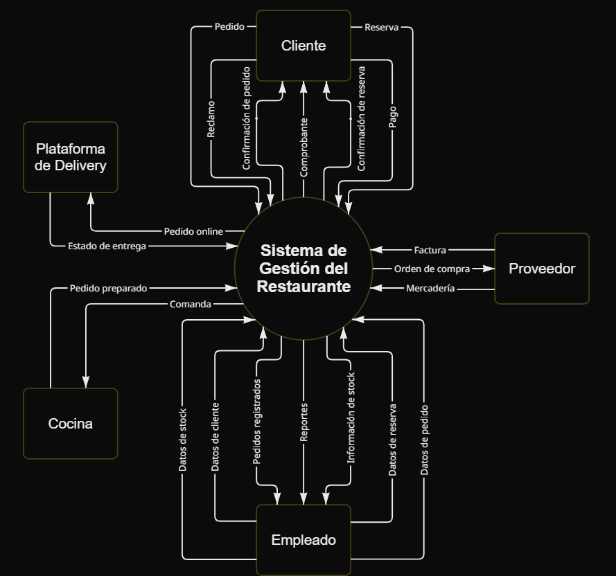
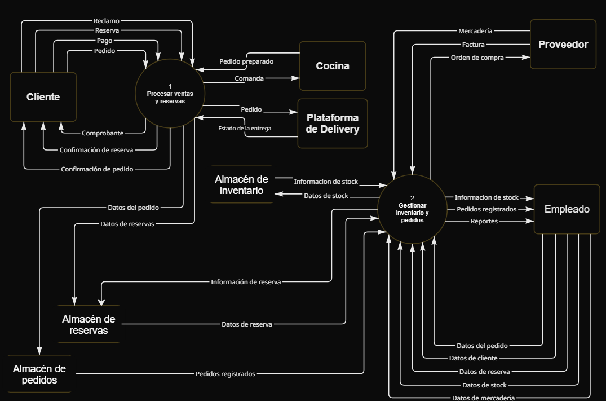

Se analiza el funcionamiento organizacional de una vinoteca/restaurante ubicada en Posadas, Misiones, con el objetivo de comprender cómo se desarrollan las actividades diarias, tales como la atención al cliente, la gestión de pedidos, el control de stock y la coordinación entre los distintos sectores. El análisis se centra en identificar cómo se organiza y circula la información dentro del negocio, así como en reconocer los principales problemas que afectan su funcionamiento, como demoras en la atención, errores en los pedidos y dificultades en la organización interna. El sistema de trabajo responde a la necesidad de ordenar las actividades del establecimiento, asegurar una adecuada coordinación entre sus áreas y brindar un servicio eficiente y de calidad a los clientes. A partir de esto, se busca detectar oportunidades de mejora en los procesos, con el fin de optimizar el funcionamiento general del negocio y dar respuesta a las necesidades tanto de la organización como de sus clientes.




El personal administrativo utiliza Excel para la venta y las comandas. Los mozos y el resto del personal, utilizan Alma Gestión.
Todo está controlado mediante Alma Gestión.
Sí. Todos los empleados reciben capacitaciones. Los cursos son pagados por la empresa.
Si el cliente trae un vino picado, en mal estado, se le hace un cambio. En el restaurante, con quejas como "El bife está crudo" en uno o dos minutos se soluciona. El cliente siempre tiene la razón en esos casos.
Desde las 8 hasta las 13 a la mañana. Y desde las 17 hasta cuando se vaya el úlimo cliente.
Los empleados en el área de ventas y administración se encargan de la recepción de personas, ventas online, administración y control de inventarios, mientras que el encargado de servicio realiza la gestión de mozos, coordinación del servicio, atención directa en salón y supervisión de tiempos de cocina.
Si. Todos los empleados tienen un horario fijo según su cargo.
La resolución de conflictos internos. Las diferencias personales no deberían afectar el flujo de trabajo. También la autonomía eléctrica, mencionando que si no hay luz, "mueren"
Si, pero depende mucho del trabajo en equipo.
Si
Si
Si
Si
No hay un sistema formal. En el restaurante, se resuelven rápidamente (5/15 minutos) a través del personal y encargados. En distribución, se canalizan a través del vendedor/comercial y luego a responsables del área
Demoras en la cocina o en la entrega, problemas de atención del personal, falta de stock o insatisfacción del cliente con la comida.
Se maneja mediante un sistema de inventario: Los productos ingresan a depósitos (stock).Luego se trasladan al punto de venta (inventario).A medida que se venden, el sistema descuenta automáticamente.Igualmente, en cocina es más complejo por el uso de materias primas, recetas y pérdidas (mermas).
Se reciben productos en depósitos desde proveedores. Luego se registran en el sistema y se distribuyen a los puntos de venta o al restaurante según necesidad.
La comunicación se realiza a través del sistema digital y también mediante interacción directa. Además, hay una estructura organizativa donde los pedidos y situaciones se elevan a jefes de sector.
El cliente realiza el pedido a través del mozo, quien lo comunica al sistema. Luego la cocina prepara el pedido y el servicio lo entrega en la mesa. El proceso requiere rapidez, ya que los tiempos de respuesta son clave para la satisfacción del cliente.
Si
Si